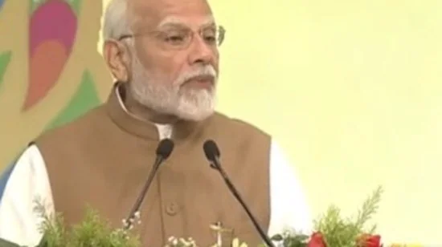

PM Modi addressed the 'No Money for Terror' Ministerial Conference on Friday.
India has always been firm in tackling terror, Prime Minister Narendra Modi said on Friday as he addressed the 'No Money for Terror' Ministerial Conference where he also warned that new finance technologies are being used to fund such activities. “We lost thousands of precious lives but we have fought terrorism bravely. We have been firm in tackling terror. We consider that even a single attack is one too many,” the Prime Minister stressed as he called for a "uniform zero tolerance approach".
“New kinds of technology are being used for terror financing and recruitment. There is a need for a uniformed understanding for new finance technologies. At times even activities like money laundering and financial crimes have been known to help terror funding. In such a complex environment, the UNSC and the Financial Action Task Force (FATF) are helping the war against terrorism,” PM Modi further underlined.
| At 'No Money for Terror’ Conference, PM says, "...Well known that terrorist orgs get money through several sources-one is state support. Certain countries support terrorism as part of their foreign policy. They offer political, ideological & financial support to them..."